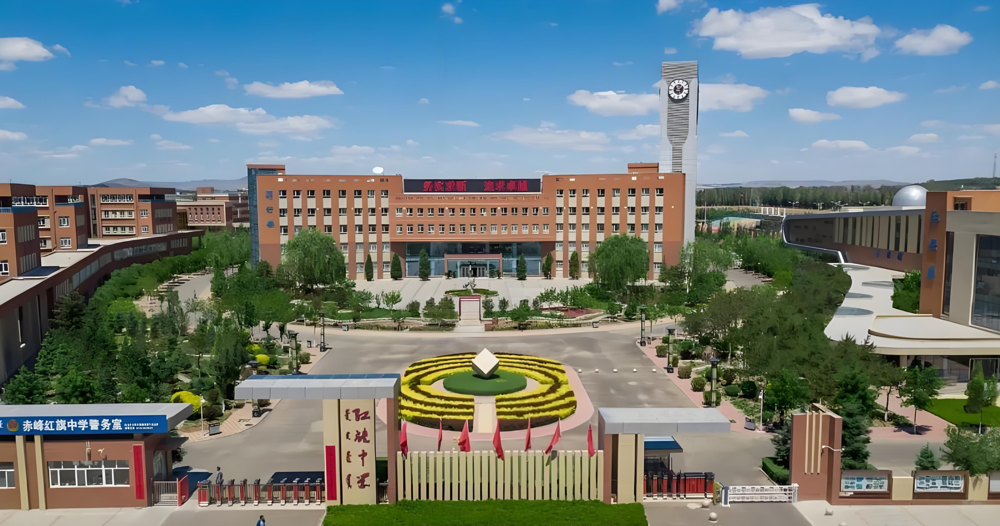
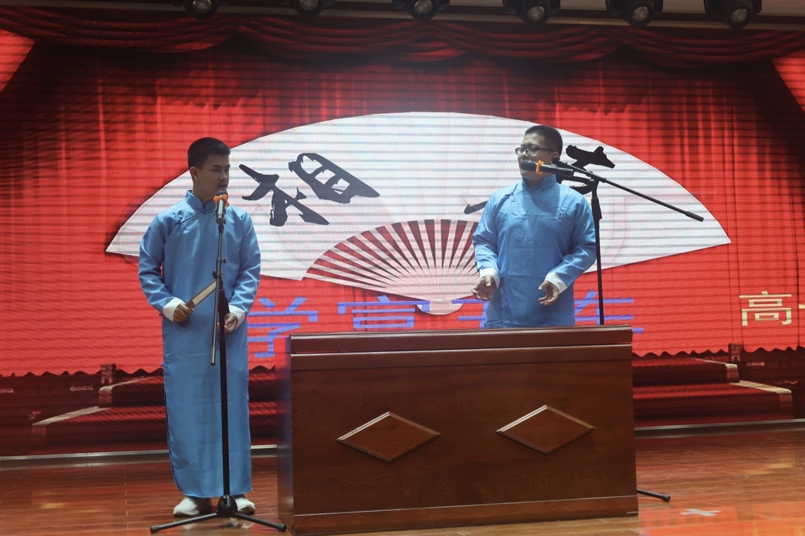
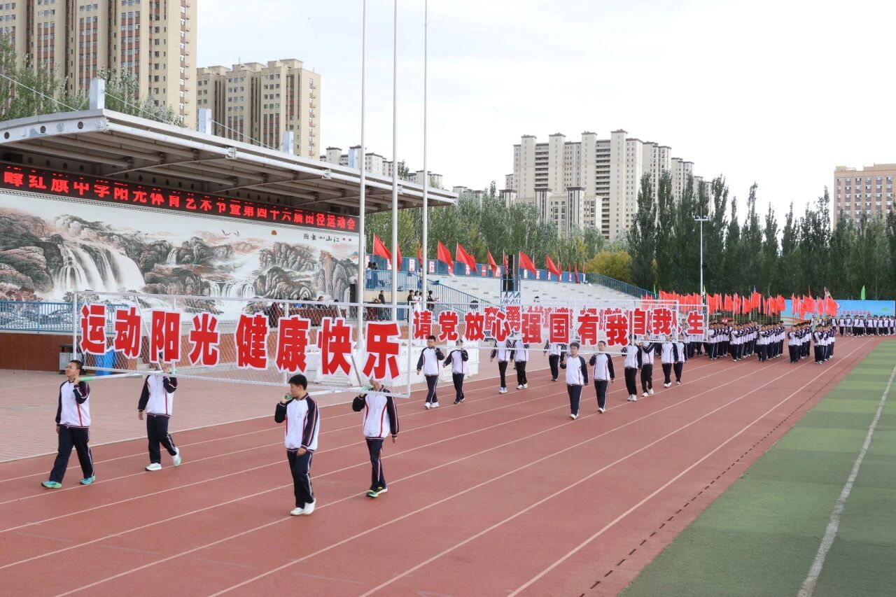
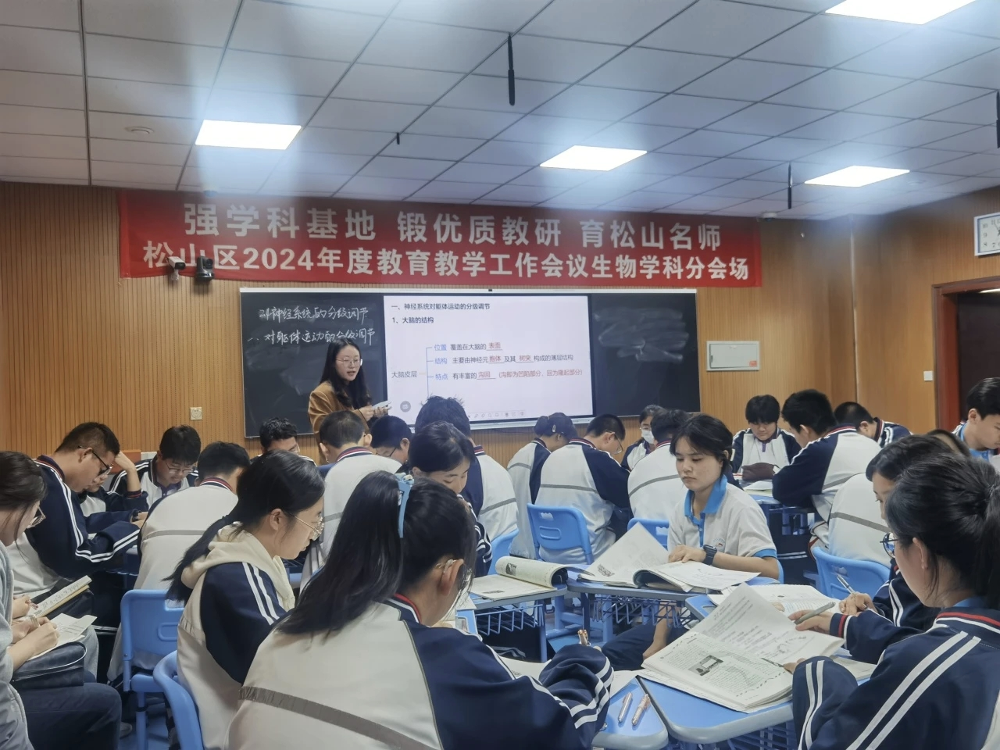

学校概况
五十载风华 · 积淀深厚
赤峰红旗中学是内蒙古自治区示范性普通高中，建校历史悠久，办学实力雄厚，教学质量稳居赤峰市前列，多年来培养了大批优秀人才，在当地享有很高的声誉和广泛影响力，是深受社会认可的优质品牌高中。
这里的每一棵草木、每一条长廊，都见证了学子们奋斗的青春。
1976
建校时间
40+
优秀社团
97%+
本科升学率
TOP
自治区示范校
多彩校园生活

科技文化艺术节
每年的金秋时节，学子们不仅在学术上切磋，更在舞台上绽放。合唱、话剧、科技发明展示，让校园充满青春的活力。

静谧修身之地
这里有现代化的标准运动场和藏书丰富的图书馆。在书香与汗水中，红旗人不仅磨练意志，更充实了自己的灵魂。

名师引领航程
拥有一支师德高尚、业务精湛的教师团队。他们不仅是传道授业的良师，更是学子成长路上的引路人。
校友之声
“我在红旗学到的不仅是课本知识，更是那种永不言弃、争创红旗的精神。这种精神一直激励着我走到了今天。”
—— 某届优秀毕业生
“校园里的那排老树，教室里的朗朗书声，现在想起来依然温暖。红旗是我心中永远的一抹亮色。”
—— 在外求学的赤峰学子